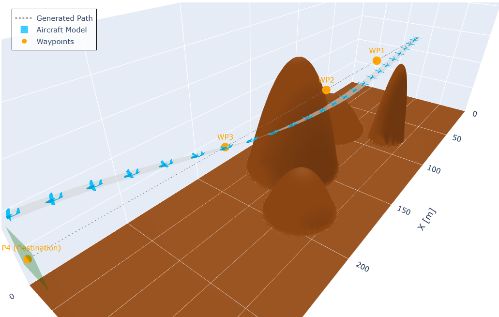
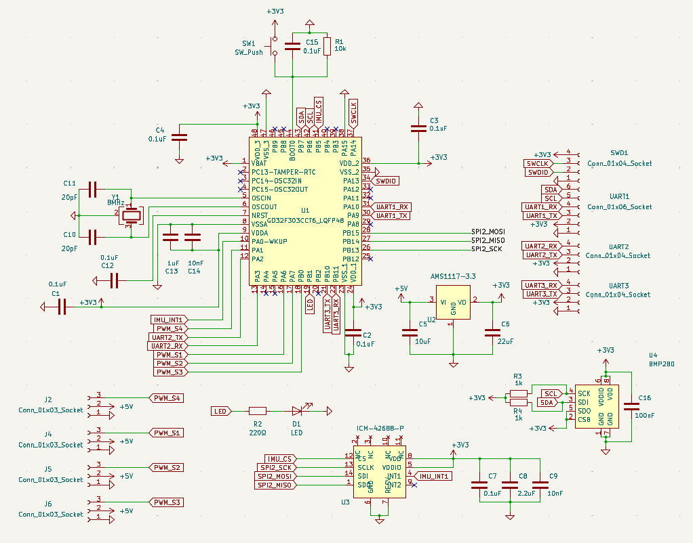
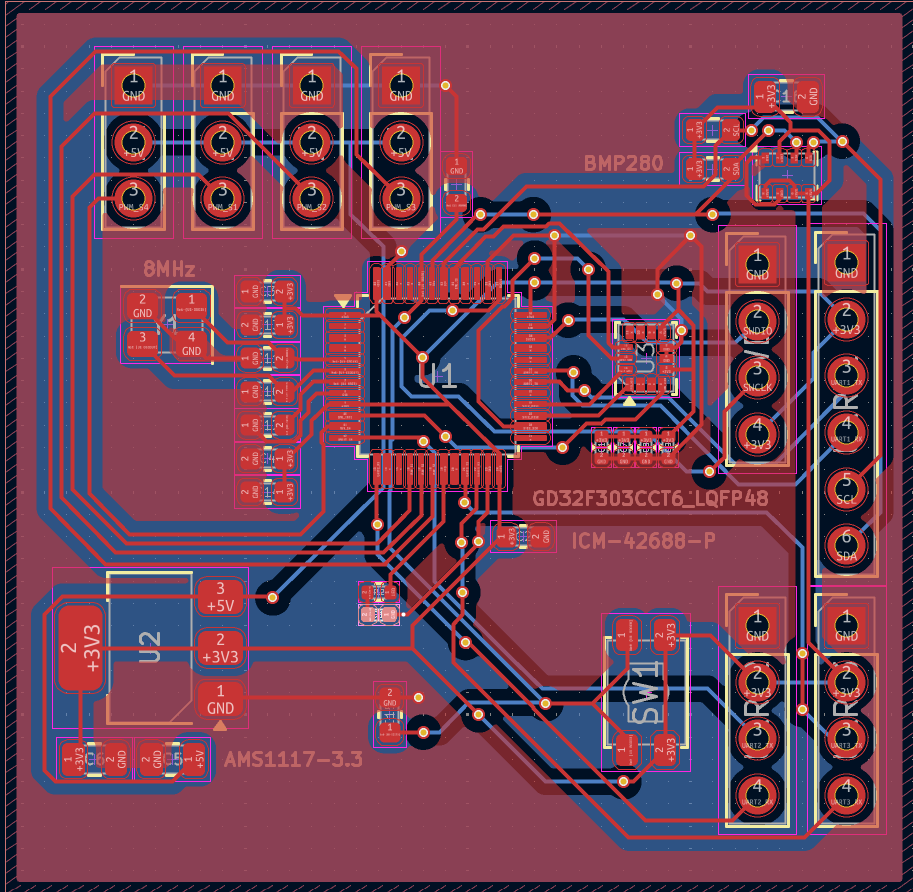

The cool thing about the modern drone hobby is that (just about) everything has already been figured out by the DIY community.
This hasn’t stopped me from rolling my own autopilot logic, compiling bespoke firmware, and eventually designing my own flight controller…


But I’m getting ahead of myself. The first step was to familiarize myself with INAV source code to the point of being able to mod it. Here’s a few of the changes I’ve made.
An AUX-selectable roll-limiting mode. It only attenuates pilot roll input in the direction that would increase the current bank angle — as roll approaches a configurable max, same-direction stick input tapers toward zero, but rolling back toward level is always available. No auto-leveling, no attitude hold, just a soft ceiling on bank angle.
An alternative to INAV’s stock ANGLE mode. Rather than cascading through a PID outer loop that outputs a rotation rate, ATTITUDE strips that out and applies a raw, linear 0–100% multiplier directly from angle error to control-surface output — trading ANGLE’s “correction speed” feel for something closer to spring stiffness.
A throttle-limiting mode for fixed-wing aircraft. It attenuates throttle proportionally to nose-down pitch angle, cutting to idle at a configurable dive angle, so the motor spools down automatically in a dive and comes right back the instant the nose comes up.
You can view the code here.
To validate the roll/pitch logic before trusting it to real hardware, I built a real-time 3D flight simulator (Python + Three.js). The aircraft flies a simple PD-controlled, wings-level path until terrain enters an ellipsoidal “Region of Avoidance” projected ahead along its velocity vector — at which point the penetration depth and surface normal of the nearest threat drive proportional roll and pitch corrections to steer clear, all while holding airspeed and compensating for gravity.
You can view the code here.